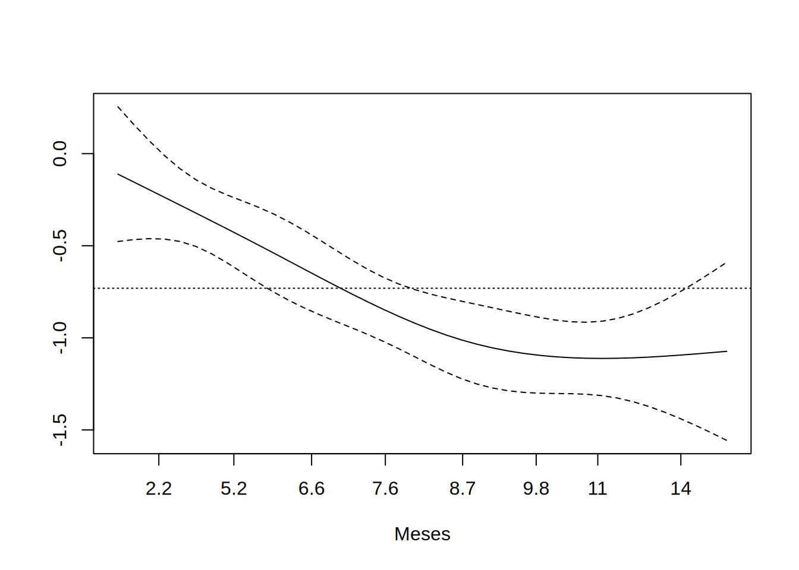

flowchart LR A[Curvas por<br/>grupo] --> B[Modelo de Cox:<br/>razão de taxas] B --> C[Covariáveis<br/>no tempo] C --> D[Cox por desfecho<br/>e Fine-Gray] D --> E[Fragilidade] E --> F[Seleção e censura<br/>informativa] F --> G[Censura<br/>intervalar] G --> H[Desenho<br/>amostral]
19 Modelos para o tempo do processo
Razão de taxas, desfechos concorrentes e seleção
19.1 Introdução
O capítulo “O tempo do processo: análise de duração”, na Parte IV, descreveu o tempo do processo com curvas de pendência, incidências acumuladas e tempos médios dentro de prazos. As curvas comparam grupos, mas não separam o efeito de uma característica do efeito de outras, nem acomodam características contínuas ou que mudam ao longo do processo. Este capítulo trata dos modelos de regressão para o tempo, na mesma lógica dos modelos para variáveis qualitativas do capítulo “Modelos avançados”: lá, o exponencial de um coeficiente do logit é uma razão de chances; aqui, o exponencial de um coeficiente do modelo de Cox é uma razão de taxas.
O capítulo usa a mesma base simulada, com a mesma vantagem: conhecemos o mecanismo que gerou os dados. Na simulação, as varas diferem apenas na velocidade com que sentenciam; a chance final de cada desfecho é a mesma nas quatro. O laudo pericial decide boa parte dos casos, e os peritos diferem entre si. Cada modelo será lido contra esse mecanismo.
NotaObjetivos do capítulo
Ao final do capítulo, você deverá ser capaz de:
- ajustar e interpretar o modelo de Cox e verificar a proporcionalidade das taxas;
- classificar covariáveis pelo momento em que passam a ser conhecidas e evitar o viés do tempo imortal;
- distinguir as perguntas respondidas pelo modelo de Cox por desfecho e pelo modelo de Fine-Gray;
- usar a fragilidade para tratar a heterogeneidade entre peritos ou juízos;
- reconhecer problemas de seleção e de censura informativa;
- tratar a censura intervalar e reconhecer quando o estimador usual falha;
- escolher o desenho amostral para variáveis extraídas das peças processuais.
A base é montada como no capítulo anterior: a tabela de regras transforma os movimentos no par (tempo, desfecho).
processos <- read_csv("dados/duracao_processos_simulados.csv")
movimentos <- read_csv("dados/duracao_movimentos_simulados.csv")
regras <- tribble(
~movimento, ~desfecho,
"Homologado o acordo", "acordo",
"Julgado procedente o pedido", "procedente",
"Julgado procedente em parte o pedido", "procedente",
"Julgado improcedente o pedido", "improcedente",
"Extinto o processo sem resolução do mérito", "extinto",
"Indeferida a petição inicial", "extinto"
)
base <- processos |>
left_join(
movimentos |>
inner_join(regras, by = "movimento") |>
slice_min(data, by = processo, with_ties = FALSE) |>
select(processo, data_desfecho = data, desfecho),
by = "processo"
) |>
mutate(
desfecho = coalesce(desfecho, "pendente"),
data_fim = coalesce(data_desfecho, data_coleta),
meses = as.numeric(data_fim - data_distribuicao) / 30.4375,
status = as.integer(desfecho != "pendente"),
desfecho_3 = factor(
case_when(desfecho %in% c("acordo", "procedente") ~ "exito", .default = desfecho),
levels = c("pendente", "exito", "improcedente", "extinto")
),
faixa_valor = factor(
faixa_valor,
levels = c("até R$ 30 mil", "R$ 30 mil a R$ 100 mil", "acima de R$ 100 mil")
),
coorte = paste0(
format(data_distribuicao, "%Y"), "-S",
if_else(as.integer(format(data_distribuicao, "%m")) <= 6, 1, 2)
)
)19.2 Razão de taxas e o modelo de Cox
O modelo de Cox (Cox, 1972) descreve a taxa de resolutividade de um processo com características \(x\) como uma taxa básica, comum a todos, multiplicada por um fator que depende das características:
\[ h(t \mid x) = h_0(t) \exp(\beta_1 x_1 + \dots + \beta_p x_p) \]
A taxa básica \(h_0(t)\) pode ter qualquer forma e não é estimada diretamente; por isso o modelo é chamado de semiparamétrico. O que se estima são os coeficientes, e o exponencial de cada um é uma razão de taxas: quantas vezes a taxa de um processo com a característica é maior que a de um processo sem ela, mantidas as demais. A suposição central é que essa razão seja constante ao longo do tempo, a proporcionalidade das taxas.
O modelo abaixo tem como ato qualquer desfecho e, como covariáveis, a vara, a faixa do valor da causa, o pedido de tutela de urgência e a inicial instruída com documentos.
cox <- coxph(
Surv(meses, status) ~ vara + faixa_valor + tutela_pedida + inicial_instruida,
data = base
)
summary(cox)$conf.int[, c(1, 3, 4)] |>
round(2) exp(coef) lower .95 upper .95
varaVara B 0.82 0.74 0.91
varaVara C 0.72 0.64 0.80
varaVara D 0.48 0.43 0.54
faixa_valorR$ 30 mil a R$ 100 mil 0.92 0.84 1.00
faixa_valoracima de R$ 100 mil 0.84 0.76 0.93
tutela_pedidaTRUE 1.19 1.10 1.29
inicial_instruidaTRUE 0.84 0.78 0.91A razão de taxas da Vara D em relação à Vara A é 0,48: entre os processos ainda pendentes, num mesmo momento, a taxa de desfecho na Vara D é cerca de metade da taxa na Vara A, mantidas as demais características. Processos com pedido de tutela têm taxa 19% maior.
Três leituras devem ser evitadas. A razão de taxas não é razão entre durações: uma razão de 0,5 não significa que o processo dure o dobro. Não é razão entre probabilidades de ganhar: o ato aqui é qualquer desfecho, inclusive a improcedência. E não é uma medida de quanto um processo individual seria mais rápido em outra vara, porque compara conjuntos de processos ainda pendentes, cuja composição muda com o tempo (Hernán, 2010).
19.2.1 Proporcionalidade
A função cox.zph() testa se cada razão de taxas é constante no tempo, com base nos resíduos de Schoenfeld (Therneau; Grambsch, 2000).
cox.zph(cox) chisq df p
vara 35.37 3 1.0e-07
faixa_valor 2.18 2 0.34
tutela_pedida 1.56 1 0.21
inicial_instruida 37.02 1 1.2e-09
GLOBAL 78.97 7 2.2e-14A proporcionalidade é rejeitada para a vara. Não é surpresa: no capítulo anterior, a razão de taxas entre as Varas D e A era próxima de 0,8 nos primeiros quatro meses, quando quase todo desfecho é extinção, e caía para cerca de 0,6 depois. O gráfico dos resíduos mostra o coeficiente da Vara D mudando ao longo do tempo; a linha pontilhada é o coeficiente único estimado pelo modelo.
zph_coeficientes <- cox.zph(cox, terms = FALSE)
plot(zph_coeficientes, var = "varaVara D", resid = FALSE, xlab = "Meses", ylab = "Coeficiente da Vara D (escala log)")
abline(h = coef(cox)[["varaVara D"]], lty = 3)
Há três saídas usuais. A primeira é estratificar o modelo pela variável que viola a suposição, deixando cada estrato com a sua taxa básica; o efeito dela deixa de ser estimado, mas o das demais fica ajustado. A segunda é dividir o seguimento em períodos e estimar um coeficiente por período. A terceira é modelar o efeito como função do tempo. A segunda é a mais fácil de comunicar:
periodos <- survSplit(
Surv(meses, status) ~ ., data = base, cut = 4, episode = "periodo"
)
map(1:2, \(k) {
coxph(
Surv(tstart, meses, status) ~ vara + faixa_valor + tutela_pedida + inicial_instruida,
data = filter(periodos, periodo == k)
) |>
coef() |>
exp() |>
round(2)
}) |>
set_names("Até 4 meses", "Depois de 4 meses") |>
bind_cols(termo = names(coef(cox)), .name_repair = "minimal") |>
relocate(termo)# A tibble: 7 × 3
termo `Até 4 meses` `Depois de 4 meses`
<chr> <dbl> <dbl>
1 varaVara B 0.82 0.82
2 varaVara C 0.76 0.7
3 varaVara D 0.82 0.42
4 faixa_valorR$ 30 mil a R$ 100 mil 0.9 0.93
5 faixa_valoracima de R$ 100 mil 0.93 0.82
6 tutela_pedidaTRUE 1.05 1.23
7 inicial_instruidaTRUE 0.36 1.04A razão de taxas da Vara D é 0,82 até o quarto mês e 0,42 depois. O coeficiente único do primeiro modelo era uma média ponderada das duas fases. A inicial instruída, que o teste também apontou, mostra outro padrão: reduz a taxa de desfecho no início (0,36), porque evita a emenda e o indeferimento, e quase não a altera depois (1,04).
A saída do summary() também traz a concordância, a proporção de pares de processos em que o modelo ordena corretamente quem termina primeiro. Ela é útil para comparar modelos ajustados na mesma base, mas não tem limiar universal de qualidade, e um modelo explicativo pode ser útil com concordância modesta.
19.3 Covariáveis no tempo
No processo judicial, cada característica passa a ser conhecida numa data, e essa data decide o papel dela no modelo. A pergunta é: o que se sabe no termo inicial?
| Tipo | Exemplos | Conhecida em | Papel |
|---|---|---|---|
| Ex ante | Valor da causa, pedido de tutela, documentos da inicial | Distribuição | Previsão: é o que se sabe quando a ação é proposta |
| Designada depois, ao acaso | Vara (sorteio na distribuição) | Logo após a distribuição | Controle: o sorteio a torna independente das características ex ante |
| Designada depois, por escolha | Perito nomeado pelo juiz | Semanas ou meses depois | Controle, com cautela: a escolha pode depender do caso |
| Mediadora | Conclusão do laudo | No meio do processo | Explicação do caminho; nunca como covariável fixa no termo inicial |
19.3.1 O viés do tempo imortal
Suponha que se queira medir o efeito de um laudo favorável sobre a taxa de êxito. O atalho é criar uma variável fixa, “teve laudo favorável”, e incluí-la no modelo como se fosse conhecida na distribuição. O atalho credita ao grupo do laudo favorável todo o tempo anterior ao laudo, durante o qual nenhum êxito podia ocorrer. Esse tempo é chamado de imortal, porque é garantido pela própria definição do grupo (Suissa, 2008).
A forma correta é tratar o laudo como covariável dependente do tempo: o processo conta no grupo sem laudo favorável até a data do laudo e no grupo com laudo favorável depois dela. A função tmerge() divide o seguimento de cada processo nesses trechos.
laudos <- movimentos |>
filter(movimento == "Laudo pericial juntado") |>
select(processo, data_laudo = data)
com_laudo <- base |>
left_join(laudos, by = "processo") |>
mutate(
id = row_number(),
t_laudo = as.numeric(data_laudo - data_distribuicao) / 30.4375,
laudo_favoravel_fixo = !is.na(t_laudo) & real_laudo_favoravel %in% TRUE
)
trechos <- tmerge(
select(com_laudo, id, vara),
select(com_laudo, id, meses, desfecho_3),
id = id,
exito = event(meses, as.integer(desfecho_3 == "exito"))
)
trechos <- tmerge(
trechos,
com_laudo |> filter(laudo_favoravel_fixo) |> select(id, t_laudo),
id = id,
laudo_favoravel = tdc(t_laudo)
)
c(
fixo = exp(coef(coxph(Surv(meses, desfecho_3 == "exito") ~ laudo_favoravel_fixo, data = com_laudo))),
dependente_do_tempo = exp(coef(coxph(Surv(tstart, tstop, exito) ~ laudo_favoravel, data = trechos)))
) |>
round(1) fixo.laudo_favoravel_fixoTRUE dependente_do_tempo.laudo_favoravel
14.3 38.9 As duas especificações dão razões muito diferentes: 14,3 com a variável fixa e 38,9 com a dependente do tempo. Só a segunda compara, em cada momento, processos que já têm laudo favorável com processos que não têm. A primeira dilui o efeito nos meses anteriores ao laudo e, além disso, condiciona no futuro, porque classifica cada processo pelo que aconteceu depois do termo inicial.
O exemplo usa a coluna real_laudo_favoravel, que só a simulação tem. Em dados reais, a conclusão do laudo precisa ser extraída da peça, com o cuidado de análise de conteúdo discutido no capítulo “Análise de conteúdo de textos jurídicos”.
19.4 Desfechos concorrentes com covariáveis
Com desfechos concorrentes, há dois modelos de regressão, e eles respondem a perguntas diferentes (Lau; Cole; Gange, 2009; Austin; Lee; Fine, 2016).
- Modelo de Cox por desfecho. Modela a taxa de resolutividade de um desfecho entre os processos ainda pendentes, tratando os outros desfechos como censura. Responde: entre os processos pendentes, com que velocidade o êxito acontece?
- Modelo de Fine-Gray. Modela a incidência acumulada do desfecho (Fine; Gray, 1999). Responde: qual a probabilidade de o processo terminar em êxito até o tempo \(t\)? O processo que teve outro desfecho permanece no conjunto de referência, com peso decrescente, porque também ele faz parte de quem não teve êxito.
No Cox por desfecho, tratar os outros desfechos como censura não é erro, porque o modelo estima uma taxa, e não uma probabilidade acumulada. O erro, visto no capítulo anterior, é transformar essa taxa em probabilidade com \(1 - \hat S(t)\).
Em R, o Cox por desfecho é um coxph() com o êxito como ato. O Fine-Gray é obtido com a função finegray(), que monta os pesos, seguida de um coxph() ponderado.
formula_exito <- ~ vara + faixa_valor + tutela_pedida + inicial_instruida + coorte
cox_exito <- coxph(
update(formula_exito, Surv(meses, desfecho_3 == "exito") ~ .),
data = base
)
dados_fg <- finegray(Surv(meses, desfecho_3) ~ ., data = base, etype = "exito")
fine_gray <- coxph(
update(formula_exito, Surv(fgstart, fgstop, fgstatus) ~ .),
weights = fgwt, data = dados_fg
)
comparacao <- tibble(
termo = names(coef(cox_exito)),
cox_por_desfecho = exp(coef(cox_exito)),
fine_gray = exp(coef(fine_gray))
)
comparacao |>
mutate(across(where(is.numeric), \(x) round(x, 2)))# A tibble: 10 × 3
termo cox_por_desfecho fine_gray
<chr> <dbl> <dbl>
1 varaVara B 0.91 1.05
2 varaVara C 0.73 0.93
3 varaVara D 0.5 0.81
4 faixa_valorR$ 30 mil a R$ 100 mil 0.96 1
5 faixa_valoracima de R$ 100 mil 0.89 1.01
6 tutela_pedidaTRUE 1.2 1.08
7 inicial_instruidaTRUE 1.2 1.48
8 coorte2024-S2 0.96 0.88
9 coorte2025-S1 0.89 0.73
10 coorte2025-S2 0.95 0.3 19.4.1 A discordância é informação
Para a Vara D, o Cox por desfecho dá 0,50, e o Fine-Gray, 0,81. Os dois estão corretos. A Vara D produz êxito em ritmo bem menor que a Vara A entre os processos pendentes, porque sentencia devagar. Mas também produz improcedências devagar e mantém mais processos pendentes por mais tempo, e esses processos ainda podem ter êxito. Por isso a incidência acumulada de êxito fica menos distante da Vara A do que a taxa sugere. Pelo mecanismo da simulação, quando todos os processos terminarem, a incidência de êxito será a mesma nas quatro varas.
Quando os dois modelos concordam, a conclusão é robusta. Quando discordam, a discordância descreve o mecanismo. Por isso, recomenda-se relatar os dois, para todos os desfechos (Latouche et al., 2013).
Quando as curvas de incidência de dois grupos se cruzam ou se aproximam com o tempo, uma razão única resume mal a diferença: é uma média, ponderada no tempo, de um efeito que muda. Para comunicar, a incidência acumulada em horizontes fixos é mais clara que um coeficiente.
aj_vara <- survfit(Surv(meses, desfecho_3) ~ vara, data = base)
s <- summary(aj_vara, times = c(6, 9, 12, 15))
tibble(
vara = str_remove(s$strata, "vara="),
meses = s$time,
exito = round(s$pstate[, 2], 3)
) |>
pivot_wider(names_from = meses, values_from = exito, names_prefix = "meses_")# A tibble: 4 × 5
vara meses_6 meses_9 meses_12 meses_15
<chr> <dbl> <dbl> <dbl> <dbl>
1 Vara A 0.102 0.352 0.477 0.511
2 Vara B 0.106 0.352 0.499 0.553
3 Vara C 0.092 0.318 0.454 0.504
4 Vara D 0.079 0.265 0.388 0.46819.4.2 O artefato da coorte recente
A coorte distribuída no segundo semestre de 2025 tem razão de 0,30 no Fine-Gray, e de 0,95 no Cox por desfecho. Os processos dessa coorte não são diferentes; foram observados por pouco tempo. O Fine-Gray calcula os pesos dos processos que tiveram outro desfecho a partir de uma única distribuição de censura para toda a base. Quando a censura depende de uma covariável, como a coorte, os pesos ficam errados para os grupos com seguimento curto, e o modelo pune a coorte nova pela falta de tempo para acumular êxitos.
A correção é estimar a distribuição de censura dentro de cada coorte, com strata() na fórmula do finegray():
dados_fg_estratos <- finegray(
Surv(meses, desfecho_3) ~ . + strata(coorte), data = base, etype = "exito"
)
fine_gray_estratos <- coxph(
update(formula_exito, Surv(fgstart, fgstop, fgstatus) ~ .),
weights = fgwt, data = dados_fg_estratos
)
exp(coef(fine_gray_estratos))[c("varaVara D", "coorte2025-S2")] |>
round(2) varaVara D coorte2025-S2
0.81 1.07 Com a censura estimada por coorte, a razão da coorte recente vai para 1,07.
19.5 Heterogeneidade não observada: o perito
Na base, o perito é a fonte de variação mais forte do desfecho. Entre os peritos com 25 ou mais processos decididos, a taxa de êxito varia bastante:
por_perito <- base |>
filter(!is.na(perito), desfecho_3 %in% c("exito", "improcedente")) |>
summarise(decididos = n(), exito = mean(desfecho_3 == "exito"), .by = perito)
por_perito |>
filter(decididos >= 25) |>
summarise(peritos = n(), menor = min(exito), maior = max(exito))# A tibble: 1 × 3
peritos menor maior
<int> <dbl> <dbl>
1 30 0.286 0.85Uma forma de tratar essa variação seria incluir um coeficiente por perito. Muitos peritos têm poucos casos, e os coeficientes deles seriam instáveis. A alternativa é a fragilidade, o nome que a análise de duração dá a um efeito aleatório: supõe-se que cada perito multiplica a taxa por um fator sorteado de uma distribuição comum, e estima-se a variância dessa distribuição. As estimativas dos peritos com poucos casos são puxadas para a média na proporção da informação que eles têm, o que se chama encolhimento.
fragilidade <- coxph(
Surv(meses, desfecho_3 == "exito") ~ vara + inicial_instruida +
frailty(coalesce(perito, "sem perito"), distribution = "gaussian"),
data = base
)
fragilidadeCall:
coxph(formula = Surv(meses, desfecho_3 == "exito") ~ vara + inicial_instruida +
frailty(coalesce(perito, "sem perito"), distribution = "gaussian"),
data = base)
coef se(coef) se2 Chisq DF p
varaVara B -0.0995 0.0751 0.0749 1.7566 1.0 0.1850
varaVara C -0.3321 0.0768 0.0766 18.7129 1.0 1.5e-05
varaVara D -0.6535 0.0797 0.0794 67.3100 1.0 2.3e-16
inicial_instruidaTRUE 0.1768 0.0575 0.0574 9.4440 1.0 0.0021
frailty(coalesce(perito, 102.6710 26.2 5.3e-11
Iterations: 6 outer, 18 Newton-Raphson
Variance of random effect= 0.0845
Degrees of freedom for terms= 3.0 1.0 26.2
Likelihood ratio test=236 on 30.2 df, p=<2e-16
n= 4000, number of events= 1393 A variância estimada é 0,085 na escala do logaritmo da taxa, o que corresponde a um desvio-padrão de 0,29. Um perito um desvio-padrão acima da média tem taxa de êxito 1,34 vez a do perito médio. Na simulação, o perito altera a chance de o laudo ser favorável, e não diretamente a taxa de êxito; a fragilidade capta o efeito que chega à taxa.
Três cuidados acompanham o modelo:
- Convergência. O ajuste por verossimilhança penalizada pode não convergir. O pacote
coxmeestima o mesmo modelo por outro método e serve de conferência. - Erro de classificação. A fragilidade absorve toda variação não explicada, inclusive a que vem de erros na identificação dos desfechos. Se a regra de classificação piora, a variância do perito aumenta.
- Perito ausente. Processos extintos antes da perícia ou recentes não têm perito, e entram aqui num nível único, “sem perito”. Ter perito depende do tempo transcorrido, e o tratamento adequado é o perito como covariável dependente do tempo, que entra a partir da nomeação.
19.6 Seleção e censura informativa
Os métodos dos dois capítulos supõem censura não informativa, condicional às covariáveis. Quando o motivo de um processo não ter desfecho observado está ligado ao desfecho que ele teria, a suposição falha. Diante dos processos pendentes, o impulso de quem vem da econometria é um modelo de seleção. Na maior parte dos casos, ele não é a ferramenta principal: o problema é de tempo, e não de seleção, porque o processo pendente ainda vai ter desfecho, e o que mais explica estar pendente é a idade do processo, informação que o modelo de duração já usa.
| Ferramenta | Pressuposto | Uso |
|---|---|---|
| Desfechos concorrentes com censura | Censura independente, condicional às covariáveis | Modelo principal |
| Ponderação pelo inverso da probabilidade de censura (IPCW) | A censura depende só de variáveis observadas | Classificadores de previsão, como regressão logística ou árvores, num horizonte fixo (Robins; Finkelstein, 2000) |
| Modelo de seleção de Heckman | Erros normais correlacionados e uma variável que afete a seleção, mas não o desfecho | Teste de robustez (Heckman, 1979) |
| Fragilidade compartilhada entre tempo e desfecho | Um mesmo efeito latente do caso afeta os dois | Versão do modelo de seleção para dados de duração |
A seleção pesa de verdade em pontos específicos do processo. A taxa de êxito entre os processos julgados no mérito é condicional a terem chegado ao mérito, e a desistência e o abandono provavelmente se concentram nos casos fracos, por razões que os dados não registram.
A definição da população também é uma seleção. Excluir da análise os processos que, depois da distribuição, foram remetidos a outro juízo é condicionar no futuro. A exclusão só se justifica se a causa da remessa já existia na distribuição, como o domicílio do autor fora da comarca; nesse caso, a população é definida por uma característica de base que só se revela depois.
Há, por fim, uma seleção que nenhum modelo corrige. A base contém apenas quem foi ao Judiciário. Um modelo ajustado nesses processos e aplicado a quem ainda não ajuizou supõe que os dois grupos se parecem. Sem um denominador, como os pedidos negados na via administrativa, essa diferença fica fora do alcance dos dados (ver o capítulo “Seleção dos litígios e desigualdades no sistema de justiça”).
19.7 Censura intervalar
A perícia é, em muitos processos, a etapa mais longa, e nem sempre tem fim observado. A nomeação do perito aparece nos movimentos; a juntada do laudo, em muitos sistemas, aparece como “Documento juntado”, título usado para qualquer documento. A duração até o laudo só é conhecida dentro de um intervalo.
Na base simulada, o laudo tem movimento próprio. Para treinar, vamos fingir que ele não tem. O limite esquerdo do intervalo é a nomeação do perito. O limite direito é o primeiro movimento que só acontece depois do laudo: a ordem para as partes se manifestarem sobre ele, a proposta de acordo, a homologação ou a conclusão para sentença. O tempo é medido em semanas.
depois_do_laudo <- c(
"Determinada a manifestação sobre o laudo", "Proposta de acordo juntada",
"Homologado o acordo", "Conclusos para sentença"
)
intervalos <- movimentos |>
filter(movimento == "Nomeado perito") |>
summarise(nomeacao = min(data), .by = processo) |>
inner_join(
movimentos |>
filter(movimento %in% depois_do_laudo) |>
summarise(sinal = min(data), .by = processo),
by = "processo"
) |>
left_join(select(processos, processo, data_distribuicao, real_data_laudo), by = "processo") |>
mutate(
esquerda = floor(as.numeric(nomeacao - data_distribuicao) / 7),
direita = ceiling(as.numeric(sinal - data_distribuicao) / 7),
real = as.numeric(real_data_laudo - data_distribuicao) / 7
)O estimador de Turnbull (1976) generaliza o Kaplan-Meier para intervalos (Sun, 2006). No survival, basta informar os dois limites com type = "interval2".
turnbull <- survfit(Surv(esquerda, direita, type = "interval2") ~ 1, data = intervalos)O atalho é imputar o ponto médio do intervalo. A tabela compara as medianas com a verdade, que a simulação conhece.
medianas <- tibble(
metodo = c("Verdade", "Turnbull", "Ponto médio", "Limite direito"),
semanas = c(
median(intervalos$real),
unname(quantile(turnbull, 0.5)$quantile),
median((intervalos$esquerda + intervalos$direita) / 2),
median(intervalos$direita)
)
)
medianas# A tibble: 4 × 2
metodo semanas
<chr> <dbl>
1 Verdade 23.4
2 Turnbull 14.5
3 Ponto médio 17.5
4 Limite direito 26 O Turnbull erra muito para menos (14,5 semanas, contra 23,4). O ponto médio também erra (17,5). A causa está num pressuposto do estimador: a inspeção não informativa. O Turnbull supõe que as datas que formam o intervalo não dependem de onde o evento está dentro dele. Aqui, o limite direito é provocado pelo próprio laudo: o juiz manda as partes se manifestarem porque o laudo chegou. O limite direito é, na verdade, a data do laudo mais um atraso de reação do cartório. Em símbolos, \(R = T + D\), e o problema é de medida com erro, e não de inspeção independente. O limite esquerdo, por sua vez, está longe do laudo, e o estimador espalha a probabilidade pelo intervalo inteiro.
A saída é medir o atraso \(D\) onde a data exata é conhecida. Basta uma subamostra em que a data do laudo seja lida na própria peça, por exemplo no carimbo de protocolo do PDF. Com o atraso típico, corrige-se o limite direito.
set.seed(2026)
validacao <- intervalos |>
slice_sample(n = 200)
atraso <- median(validacao$direita - validacao$real)
c(
atraso_semanas = atraso,
mediana_corrigida = median(intervalos$direita - atraso),
verdade = median(intervalos$real)
) atraso_semanas mediana_corrigida verdade
2.285714 23.714286 23.428571 A correção pela mediana do atraso é a forma mais simples de deconvolução. A subamostra também serve para medir quanto as regras que deduzem o intervalo acertam: se a data exata cai dentro do intervalo, qual a largura dos intervalos e qual dos movimentos genéricos era o laudo. Os pacotes icenReg e interval oferecem modelos de regressão e testes para censura intervalar, e o msm trata modelos de fases observados em datas de inspeção.
19.8 Amostragem para variáveis caras
As características mais informativas de um processo estão nas peças: o tipo de pedido, a prova que acompanha a inicial, a conclusão do laudo. Ler as peças tem custo, mesmo com modelos de linguagem, porque o acesso aos autos é limitado e a leitura precisa ser validada (capítulo “Análise de conteúdo de textos jurídicos”). O desenho da amostra decide que perguntas sobre o tempo podem ser respondidas.
| Desenho | Como se faz | Responde | Não responde |
|---|---|---|---|
| Caso-controle pelo desfecho | Sorteiam-se processos de cada desfecho | Que fatores distinguem os desfechos, com reponderação | Nada sobre tempo: só há processos com desfecho |
| Todos os decididos | Lêem-se os processos com desfecho | Taxas entre os decididos | Incidência: a característica falta justamente nos pendentes |
| Coorte com pendentes | Sorteiam-se processos distribuídos, decididos ou não | Incidência acumulada e modelos com a característica | Nada falta, salvo a precisão de uma amostra |
| Caso-coorte | Subcoorte sorteada mais todos os casos do desfecho de interesse, com pesos | Modelos para um desfecho raro, com menos leituras | Vários desfechos ao mesmo tempo |
O desenho de coorte é o que a análise de duração exige: a característica precisa existir para quem teve e para quem não teve desfecho, com o mesmo critério de seleção. O caso-coorte (Prentice, 1986) é uma alternativa mais econômica quando o interesse está num único desfecho raro.
Na base, suponha que “inicial instruída com documentos” só pudesse ser obtida lendo a petição inicial, e que houvesse orçamento para 600 leituras. A amostra de coorte é sorteada pelo hash do número do processo: os 600 menores valores do hash. O sorteio é estável. Se o universo crescer, os sorteados continuam sorteados, e os novos entram ou não pela mesma regra.
amostra <- base |>
mutate(hash = cli::hash_md5(processo)) |>
slice_min(hash, n = 600)
incidencia_12 <- function(dados) {
fit <- survfit(Surv(meses, desfecho_3) ~ inicial_instruida, data = dados)
summary(fit, times = 12)$pstate[, 2]
}
tibble(
inicial_instruida = c(FALSE, TRUE),
base_inteira = incidencia_12(base),
amostra_de_coorte = incidencia_12(amostra)
) |>
mutate(across(where(is.numeric), \(x) round(x, 3)))# A tibble: 2 × 3
inicial_instruida base_inteira amostra_de_coorte
<lgl> <dbl> <dbl>
1 FALSE 0.372 0.379
2 TRUE 0.509 0.53 Com 15% dos processos, a amostra de coorte reproduz a incidência de êxito aos 12 meses de cada grupo. Uma amostra de caso-controle de mesmo tamanho não permitiria calcular incidência alguma, e uma amostra só de decididos não teria a característica para os pendentes.
19.9 Fases com covariáveis
O modelo de Cox se estende ao modelo de fases do capítulo anterior: cada passagem entre fases ganha a sua própria taxa e os seus próprios coeficientes. No survival, basta ajustar o coxph() sobre os dados em trechos, com o identificador do processo.
trechos_fases <- bind_rows(
com_laudo |>
transmute(
processo, vara, inicio = 0,
fim = coalesce(t_laudo, meses),
estado = if_else(is.na(t_laudo), desfecho, "laudo")
),
com_laudo |>
filter(!is.na(t_laudo)) |>
transmute(processo, vara, inicio = t_laudo, fim = meses, estado = desfecho)
) |>
filter(fim > inicio) |>
mutate(estado = factor(
estado,
levels = c("pendente", "laudo", "acordo", "procedente", "improcedente", "extinto")
))
cox_fases <- coxph(Surv(inicio, fim, estado) ~ vara, data = trechos_fases, id = processo)
tibble(
passagem = names(coef(cox_fases)),
razao = exp(coef(cox_fases))
) |>
filter(str_detect(passagem, "Vara D")) |>
mutate(
passagem = str_remove(passagem, "varaVara D_") |>
str_replace_all(c("1:2" = "inicial → laudo", "1:6" = "inicial → extinto",
"2:3" = "laudo → acordo", "2:4" = "laudo → procedente",
"2:5" = "laudo → improcedente")),
razao = round(razao, 2)
)# A tibble: 5 × 2
passagem razao
<chr> <dbl>
1 inicial → laudo 0.94
2 laudo → acordo 0.81
3 laudo → procedente 0.29
4 laudo → improcedente 0.31
5 inicial → extinto 0.78O modelo localiza a diferença da Vara D. A chegada do laudo tem praticamente o mesmo ritmo que na Vara A; a sentença depois do laudo, procedente ou improcedente, sai a cerca de um terço do ritmo. O modelo de um só desfecho diz que a Vara D é mais lenta; o modelo de fases diz em que fase.
19.10 Atividade
A atividade usa a base simulada.
- Cox. Ajuste o modelo de Cox para qualquer desfecho com a faixa do valor da causa como única covariável. Verifique a proporcionalidade. A razão de taxas muda entre os períodos?
- Tempo imortal. Repita a comparação da seção sobre covariáveis no tempo usando a nomeação do perito como variável. A variável fixa “teve perito” aumenta ou diminui a taxa de desfecho? Por quê?
- Dois modelos. Ajuste o Cox por desfecho e o Fine-Gray para a extinção. A inicial instruída tem o mesmo efeito nos dois? Interprete.
- Fragilidade. Ajuste o modelo com fragilidade do perito excluindo os processos sem perito. A variância muda? Que processos foram excluídos e o que isso implica?
- Censura intervalar. Refaça a correção do atraso com subamostras de validação de 50, 100 e 400 processos. A partir de que tamanho a mediana corrigida se estabiliza?
- Amostragem. Sorteie uma amostra de caso-controle com 300 processos com êxito e 300 com improcedência. Que pergunta sobre a inicial instruída ela responde, e qual não responde?
19.11 Síntese
O modelo de Cox estima razões de taxas: velocidades relativas entre processos pendentes, e não razões entre durações ou entre probabilidades de ganhar. A suposição de que a razão é constante deve ser verificada e, quando falha, a estratificação ou a divisão do seguimento em períodos mostram o efeito em cada fase. As covariáveis se distinguem pelo momento em que passam a ser conhecidas; uma característica que surge no meio do processo, como o laudo, entra como covariável dependente do tempo, sob pena de viés do tempo imortal.
Com desfechos concorrentes, o Cox por desfecho mede velocidade, e o Fine-Gray, incidência acumulada; a discordância entre eles descreve o mecanismo, e o Fine-Gray exige cuidado quando a censura difere entre grupos. A fragilidade trata a heterogeneidade entre peritos ou juízos com encolhimento. A censura intervalar pede estimadores próprios, e o estimador usual falha quando o limite do intervalo é provocado pelo próprio evento; a validação com a data exata numa subamostra corrige o problema. Por fim, características extraídas das peças só servem à análise de duração se lidas numa amostra de coorte, que inclua os processos pendentes.
19.12 Referências
- Austin, P. C.; Lee, D. S.; Fine, J. P. Introduction to the analysis of survival data in the presence of competing risks. Circulation, v. 133, n. 6, p. 601-609, 2016. https://doi.org/10.1161/CIRCULATIONAHA.115.017719
- Cox, D. R. Regression models and life-tables. Journal of the Royal Statistical Society: Series B (Methodological), v. 34, n. 2, p. 187-202, 1972. https://doi.org/10.1111/j.2517-6161.1972.tb00899.x
- Fine, J. P.; Gray, R. J. A proportional hazards model for the subdistribution of a competing risk. Journal of the American Statistical Association, v. 94, n. 446, p. 496-509, 1999. https://doi.org/10.1080/01621459.1999.10474144
- Heckman, J. J. Sample selection bias as a specification error. Econometrica, v. 47, n. 1, p. 153-161, 1979. https://doi.org/10.2307/1912352
- Hernán, M. A. The hazards of hazard ratios. Epidemiology, v. 21, n. 1, p. 13-15, 2010. https://doi.org/10.1097/EDE.0b013e3181c1ea43
- Latouche, A.; Allignol, A.; Beyersmann, J.; Labopin, M.; Fine, J. P. A competing risks analysis should report results on all cause-specific hazards and cumulative incidence functions. Journal of Clinical Epidemiology, v. 66, n. 6, p. 648-653, 2013. https://doi.org/10.1016/j.jclinepi.2012.09.017
- Lau, B.; Cole, S. R.; Gange, S. J. Competing risk regression models for epidemiologic data. American Journal of Epidemiology, v. 170, n. 2, p. 244-256, 2009. https://doi.org/10.1093/aje/kwp107
- Prentice, R. L. A case-cohort design for epidemiologic cohort studies and disease prevention trials. Biometrika, v. 73, n. 1, p. 1-11, 1986. https://doi.org/10.1093/biomet/73.1.1
- Robins, J. M.; Finkelstein, D. M. Correcting for noncompliance and dependent censoring in an AIDS clinical trial with inverse probability of censoring weighted (IPCW) log-rank tests. Biometrics, v. 56, n. 3, p. 779-788, 2000. https://doi.org/10.1111/j.0006-341X.2000.00779.x
- Suissa, S. Immortal time bias in pharmacoepidemiology. American Journal of Epidemiology, v. 167, n. 4, p. 492-499, 2008. https://doi.org/10.1093/aje/kwm324
- Sun, J. The statistical analysis of interval-censored failure time data. New York: Springer, 2006.
- Therneau, T. M.; Grambsch, P. M. Modeling survival data: extending the Cox model. New York: Springer, 2000. https://doi.org/10.1007/978-1-4757-3294-8
- Turnbull, B. W. The empirical distribution function with arbitrarily grouped, censored and truncated data. Journal of the Royal Statistical Society: Series B (Methodological), v. 38, n. 3, p. 290-295, 1976. https://doi.org/10.1111/j.2517-6161.1976.tb01597.x